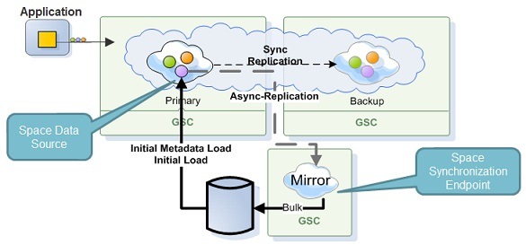

There are many situations where space data needs to be persisted to permanent storage and retrieved from it.
For example:
Our online payment system works primarily with the memory space for temporary storage of process data structures, and the permanent storage is used to extend or back up the physical memory of the process running the space.
Our online payment system works primarily with the database storage and the space is used to make read processing more efficient. Since database access is expensive, the data read from the database is cached in the space, where it is available for subsequently fast read operations.
When a space is restarted, data from its persistent store can be loaded into the space to speed up incoming query processing.
Persistency can be configured to run in Synchronous(direct persistence) or Asynchronous mode.
Synchronous
When running in direct persistency mode the data grid interacts with the data source to persist its data where the client application would get the acknowledgment for the data grid operation only after both the data grid and the SpaceDataSource finished the operation. With this persistency mode, the data grid operations performance would be heavily depended on the speed of the Space Synchronization Endpoint to commit the data and provide acknowledgment back to the data grid for the successful operation of the transaction.
For more information, see the Direct Persistency page in the developer guide.

The
For more information, see the Asynchronous Persistency - Write Behind page in the developer guide.
The Space Persistency is made up from two components, a space data source and a space synchronization endpoint. These components provide advanced persistence capabilities for the space architecture to interact with a persistence layer.
The Space data source component handles Pre-Loading data from the persistence layer and lazy load data from the persistence layer.
The Space synchronization endpoint component handles changes done within the space delegating it them to the persistence layer.
Cassandra adapter XAP comes with built in implementations of Space Data Source and Space Synchronization Endpoint for Cassandra, called CassandraSpaceDataSource and CassandraSpaceSynchronizationEndpoint, respectively.
For more information, see the Cassandra Integration section in the developer guide.
MongoDB adapter XAP comes with built in implementations of Space Data Source and Space Synchronization Endpoint for MongoDB, called MongoSpaceDataSource and MongoSpaceSynchronizationEndpoint, respectively.
For more information, see the Mongo Integration section in the developer guide.
For more information, see the Mongo Integration section in the Reference Implementations section
Hibernate adapter XAP comes with a built in implementation of Space Persistency APIs for Hibernate. This implementation is an extension of the SpaceDataSource and SpaceSynchronizationEndpoint classes. The implementation allows custom objects persistency using Hibernate mappings.
For more information, see the Hibernate Integration page in the developer guide.
For more information, see the Hibernate Integration page in the in the Reference Implementations section.
Let's use our online payment system to demonstrate how we can implement direct persistence with
First, we implement the ORM of our class we want to write into the space and provide persistency. Note that we annotate the class with SpaceClass(persist=true)
@Entity
@Table(name = "Merchant")
@SpaceClass(persist=true)
public class Merchant {
private Long id;
private String name;
private Double receipts;
private Double feeAmount;
private ECategoryType category;
private EAccountStatus status;
public Merchant() {
}
@Id
@SpaceId(autoGenerate = false)
@SpaceRouting
public Long getId() {
return id;
}
}
Next, we set up the Spring configuration for Hibernate:
<bean id="dataSource" class="org.apache.commons.dbcp.BasicDataSource" destroy-method="close">
<property name="driverClassName" value="org.hsqldb.jdbcDriver"/>
<property name="url" value="jdbc:hsqldb:hsql://localhost:9001"/>
<property name="username" value="sa"/>
<property name="password" value=""/>
</bean>
<bean id="sessionFactory" class="org.springframework.orm.hibernate3.LocalSessionFactoryBean">
<property name="dataSource" ref="dataSource"/>
<property name="annotatedClasses">
<list>
<value>xap.tutorial.mergant.model.Merchant</value>
</list>
</property>
<property name="hibernateProperties">
<props>
<prop key="hibernate.dialect">org.hibernate.dialect.HSQLDialect</prop>
<prop key="hibernate.cache.provider_class">org.hibernate.cache.NoCacheProvider</prop>
<prop key="hibernate.cache.use_second_level_cache">false</prop>
<prop key="hibernate.cache.use_query_cache">false</prop>
<prop key="hibernate.hbm2ddl.auto">update</prop>
<prop key="hibernate.jdbc.batch_size">50</prop>
</props>
</property>
</bean>
<bean id="hibernateSpaceDataSource"
class="org.openspaces.persistency.hibernate.DefaultHibernateSpaceDataSourceFactoryBean">
<property name="sessionFactory" ref="sessionFactory"/>
<property name="initialLoadChunkSize" value="2000"/>
</bean>
<bean id="hibernateSpaceSynchronizationEndpoint"
class="org.openspaces.persistency.hibernate.DefaultHibernateSpaceSynchronizationEndpointFactoryBean">
<property name="sessionFactory" ref="sessionFactory"/>
</bean>
<os-core:embedded-space id="space" space-name="xapTutorialSpace" schema="persistent"
space-data-source="hibernateSpaceDataSource"
space-sync-endpoint="hibernateSpaceSynchronizationEndpoint"/>
<os-core:properties>
<props>
<prop key="cluster-config.cache-loader.external-data-source">true</prop>
<prop key="cluster-config.cache-loader.central-data-source">true</prop>
</props>
</os-core:properties>
</os-core:embedded-space>
We define the space in the configuration with schema="persistent".
Now we are ready to deploy this as a PU.